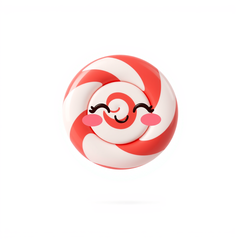

SugarCraft Core
MVC-style Model–Update–View TUI runtime

Model / Msg / Cmd / Program. The runtime everything else builds on. Includes the "cursed" cell-diff renderer (the Bubble Tea v2 name for it) — meaningful SSH bandwidth savings for slow-changing UIs.
Install
composer require sugarcraft/sugar-coreQuickstart
use SugarCraft\Core\{Cmd, KeyType, Model, Msg, Program, Subscriptions};
use SugarCraft\Core\Msg\KeyMsg;
final class Counter implements Model {
public function __construct(public readonly int $count = 0) {}
public function init(): ?\Closure { return null; }
public function subscriptions(): ?Subscriptions { return null; }
public function update(Msg $msg): array {
if ($msg instanceof KeyMsg) {
return match (true) {
$msg->type === KeyType::Char && $msg->rune === 'q' => [$this, Cmd::quit()],
$msg->type === KeyType::Up => [new self($this->count + 1), null],
$msg->type === KeyType::Down => [new self($this->count - 1), null],
default => [$this, null],
};
}
return [$this, null];
}
public function view(): string {
return "count: $this->count\n(↑/↓ to change, q to quit)";
}
}
(new Program(new Counter()))->run();What's in the box
Model interfaceFour methods:
init(), update(Msg), view(), subscriptions() — the SubscriptionCapable trait supplies a default for the last one.Cmd helpers
Cmd::quit(), Cmd::batch(), Cmd::send() — async work scheduled, never inlined.InputReaderStateful escape-sequence parser. Bracketed paste, mouse, function keys, OSC, DEC private modes. Paste is bounded: an end marker split across reads still closes the envelope, a paste larger than
MAX_PASTE_BYTES (1 MiB) surfaces in chunks, and an envelope whose end marker never arrives is closed after PASTE_IDLE_TIMEOUT (1 s) of silence so the keyboard comes back. Pasted content is sanitized by default: escapes are stripped and the U+E000–U+F8FF marker arena is swept before the payload reaches update(); opt out with ProgramOptions::$sanitizePaste only when you supply your own containment. Process launches from user data use proc_open()'s argv form — never shell interpolation."Cursed" rendererBubble Tea v2's term for the cell-diff default — here, cell-diff rendering with ≥15% bandwidth savings on a 50-tick test.
ReactPHP loopEvent-loop concurrency for input, signals, render tick, command execution.
Signal handlingSIGWINCH (resize), SIGTSTP and SIGCONT surface as Msgs in your
update(); SIGINT, SIGTERM and SIGHUP instead unwind the loop cleanly and record the 128+N exit convention for the entry point to propagate. While raw mode is active Ctrl+C is an ordinary keystroke, not a signal. On exit the runtime cancels its pending one-shot timers and restores the previous signal handlers and async-signal mode.ColorProfile::detect()Detection order: unless
CLICOLOR_FORCE / FORCE_COLOR is set, a non-tty output is NoTty first (so NO_COLOR on a pipe emits no escapes at all), then TERM=dumb → NoTty; next NO_COLOR → Ascii (colour off, bold/faint kept — it outranks the force variables), then CLICOLOR=0 → Ascii (the BSD opt-out, unless a force variable already won), then force → TrueColor (so a forced pipe still gets colour), then COLORTERM, TERM_PROGRAM, WT_SESSION and TERM patterns; a truthy CI variable → Ansi, and the fallback → Ascii.Screen / ScreenStackImmutable stack for modal / drill-down flows.
RootModelWithScreenStack + ScreenStackCapable delegate init/update/view to the active screen automatically.Component / CompositeParent-child lifecycle model.
Component interface adds onMount()/onUnmount(); Composite owns children and drains lifecycle Cmds during reconcile.WorkerPoolBounded-concurrency pool (default 4 workers) for CPU-bound tasks.
WorkerCmd::run($pool, $task) dispatches a global function name or serializable callable and yields a WorkerResultMsg on completion. A Closure cannot cross the process boundary, so dispatching one returns an already-rejected promise.Source & demos
- Source on GitHub
- Full README
- Runnable examples
- Originally inspired by bubbletea (Go); SugarCraft is developed as a native PHP project.
Demos.
Two VHS-recorded GIFs — the counter and timer demos — regenerated by CI on every push that touches the source. The other examples the library ships run straight from examples/ with php examples/<name>.php.

Counter Model
↑ / ↓ to count, q to quit. Demonstrates the full Model / Msg / Cmd loop.